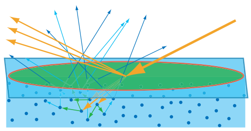
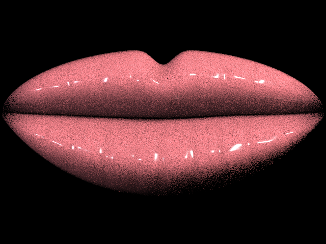
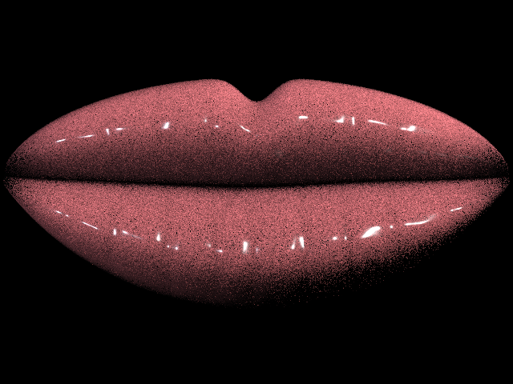

Bias issue and fix. Probably fits in the challenges section.
The layered BSDFs evaluate the following mixture model: \[ f(\omega_o,\omega_i) = (1-t) f_{base}(\omega_o,\omega_i) + t f_{gloss}(\omega_o,\omega_i). \]
where \(f_{base}\) and \(f_{gloss}\) are theApproximateBSSRDF base and gloss components respectively.
Our original sampler updated pdf to correspond toeither the base or gloss branch while returning the full BSDF value.
For the path tracing estimator
\(f L_i |\cos\theta_i| / p(\omega_i)\), the PDF must be the same density that could
have produced the sampled direction [1, pp. 56-58].
In other words, the denominator (pdf) came from only one branch, that messed up our estimator.
We corrected this by setting pdf to the mixture density
\[
p_{mix}(\omega_i) = (1-t)p_{base}(\omega_i) + t p_{gloss}(\omega_i).
\]
// src/pathtracer/bsdf.cpp, DisneyLayeredBSDF::sample_f
if (random_uniform() < gloss_weight) {
sample_disney_gloss_lobe(wo, roughness, wi, pdf);
} else {
base_layer->sample_f(wo, wi, pdf);
}
return f(wo, *wi); // f is still the full base + gloss BSDF
double gloss_weight = clamp(thickness, 0.0, 1.0);
double base_weight = 1.0 - gloss_weight;
if (random_uniform() < gloss_weight) {
sample_disney_gloss_lobe(wo, roughness, wi, &sampled_gloss_pdf);
} else {
base_layer->sample_f(wo, wi, &base_pdf);
}
double base_pdf = cosine_hemisphere_pdf(*wi);
double gloss_pdf = disney_gloss_pdf(wo, *wi, roughness);
*pdf = base_weight * base_pdf + gloss_weight * gloss_pdf;
return *pdf > 1e-10 ? f(wo, *wi) : Vector3D(0, 0, 0);We also added in a test for numerical stability for added safety.
Volumetric random-walk SSS

We wanted to compare the rendering output of the BSSRDF approximation to a subsurface scattering implementation based on volumetric light transport. This idea was mentioned in Section 4.3.2 of PBRT [1, pp. 159] and argued to produce more natural looking results in Chiang et. al. [5] (although we do not use their reparameterization). Our implementation of random-walk subsurface scattering estimation follows.
The random walk estimation uses absorption \(\sigma_a\), scattering \(\sigma_s\), anisotropy g, index of refraction ior, scale,
roughness, and specular weight parameters implemented in the RandomWalkSSSBSDF class. The path integrator detects this material on
spheres or watertight triangle meshes then enters the object and samples the free flight distances
\[
d_s = -\log(1-\xi)/\bar{\sigma_t}, \quad
\bar{\sigma_t} = (\sigma_{t,r}+\sigma_{t,g}+\sigma_{t,b})/3
\]
where \(\xi\) is a random variable uniformly samled from \([0, 1]\).
If a scatter occurs before the ray exits the volume we attenuate the transmitted light (throughput) by
\(\exp(-\sigma_a d_s)\sigma_s/(\sigma_a+\sigma_s)\) and the resample the direction using the
Henyey-Greenstein phase function
[1, pp. 711-713], [2].
The maximum number of internal reflections is capped at 16 and is not related to max_ray_depth.
// src/pathtracer/pathtracer.cpp
if (scatter_distance < boundary_distance) {
throughput *= exp_vector(-sigma_a * scatter_distance) * albedo;
position += direction * scatter_distance;
direction = sample_henyey_greenstein(direction, bsdf->get_anisotropy_g());
continue;
}The random walk does not add radiance at every interior scatter. An interior scattering only updates the path throughput and samples a new direction. The light estimate occurs when the walk exits the volume. If the ray never internally scattered, the code treats the event as a ballistic transmission and continues the camera path through the object. Otherwise, if the ray did scatter internally, the light estimate is becomes a surface sample of scene lights from that exit point. The integrator tests for visibility with a shadow ray, applies Fresnel transmission through the boundary, then adds the surviving contribution back to the camera path [1, pp. 821-824].
// src/pathtracer/pathtracer.cpp
if (!scattered) {
Ray ballistic_ray(exit_p + direction * EPS_F, direction);
ballistic_ray.depth = r.depth > 0 ? r.depth - 1 : 0;
L_out += throughput * base_tint * trace_continuation(ballistic_ray);
return L_out;
}// src/pathtracer/pathtracer.cpp
Vector3D exit_origin = exit_p + exit_normal * EPS_F;
Vector3D exit_direct;
for (SceneLight* current_light : scene->lights) {
Vector3D light_direction;
double distance_to_light;
double light_pdf;
Vector3D light_radiance =
current_light->sample_L(exit_origin, &light_direction,
&distance_to_light, &light_pdf);
if (light_pdf <= 0.0) continue;
double cos_light = dot(light_direction, exit_normal);
if (cos_light <= 0.0) continue;
Ray shadow_ray(exit_origin, light_direction);
shadow_ray.max_t = distance_to_light - EPS_F;
if (!bvh->has_intersection(shadow_ray)) {
double light_fresnel = schlick_fresnel(cos_light, 1.0, eta);
exit_direct += light_radiance * (1.0 - light_fresnel) *
cos_light / light_pdf;
}
}
L_out += throughput * base_tint * exit_direct / PI;Spheres are handled in the obvious way. Triangle meshes, on the other hand, are handled by treating the mesh as a closed boundary. After the ray enters the surface it traces through the BVH to find the next intersection and accepts that hit only if it belongs to the same mesh as the entry triangle. The interior volume is thus defined to be wherever a ray can travel from one triangle of the mesh to another triangle of the same mesh. Hence why this requires water tight meshes.
// src/pathtracer/pathtracer.cpp
bool same_subsurface_volume(const Primitive* volume_primitive,
const Primitive* hit_primitive) {
if (volume_primitive == hit_primitive) return true;
const Triangle* volume_triangle =
dynamic_cast<const Triangle*>(volume_primitive);
const Triangle* hit_triangle = dynamic_cast<const Triangle*>(hit_primitive);
return volume_triangle && hit_triangle && volume_triangle->mesh &&
volume_triangle->mesh == hit_triangle->mesh;
}
Ray boundary_ray(position, direction);
boundary_ray.min_t = EPS_F;
if (!bvh->intersect(boundary_ray, &boundary_isect)) return false;
if (!same_subsurface_volume(volume_primitive, boundary_isect.primitive)) {
return false;
}
Tinting is added to allow us to more easily compare random walk SSS with our other methods of subsurface scattering.
We computes a base tint
c_b=clamp(base_color * saturation) that is multiplied with the exit contribution after the random walk.
The base_color and saturation are parameters that can be set by the user.
This gives us a way of giving a shade to our lip gloss choices.
The color coming from the random walk/underlying skin is determined by our chromatic absorption coefficient (\(\sigma_a\)). It has red, blue, and green channels. The larger the color channel of \(\sigma_a\), the more of the corresponding color contribution is attenuated by \(T(d)=\exp(-\sigma_a d)\).
The semi-glossy boundary itself is modeled as a Fresnel microfacet reflector. At entry, Schlick Fresnel
[3] estimates how much light reflects from the dielectric interface
before entering the volume. The direct and recursive glossy boundary terms use a GGX normal distribution and Smith
masking term [1, pp. 573-578], so lower roughness produces stronger highlights while higher
specular_weight assigns more energy to the boundary layer.
Results
The following comparisons on the lips2.dae scene demonstrate the impact of the bias fix described in section [blank for now]:

lips2.dae; 1280x960; 64 spp; max ray depth 5; light samples 2; roughness 0.18;
thickness 0.45; base color (0.82, 0.22, 0.26); saturation 1.2; IOR 1.5.
|

lips2.dae; 640x480; 64 spp; max ray depth 5;
light samples 2; roughness 0.18; thickness 0.45; base color (0.82, 0.22, 0.26); saturation 1.2; IOR 1.5.
|
The following random walk renders use lips2.dae mesh with its
material changed to random_walk_layered. They are full frame renders with max ray depth 4 and
64 samples per pixel. The material tint is fixed while one parameter group is changed at a time. Higher
specular weight and lower roughness sharpen the gloss. Positive \(g\) biases scattering forward.
Higher scale decreases average mean free path which the number of rays that continue reflecting until hitting the cap.
Random-walk layered coefficient sets used below. Baseline: \(\sigma_a=(0.013,0.070,0.145)\), \(\sigma_s=(1.09,1.59,1.79)\), \(g=0.0\), IOR 1.3, scale 5.0, surface roughness 0.18, specular weight 0.45, derived base-layer weight 0.55, base color (0.82,0.22,0.26), saturation 1.2. More gloss: same except surface roughness 0.12, specular weight 0.55, derived base-layer weight 0.45. Forward scattering: same as baseline except \(g=0.55\). Shorter mean free path: same as baseline except scale 8.0.
|
 |

|
|
 |

|
References
- M. Pharr, W. Jakob, and G. Humphreys, Physically Based Rendering: From Theory to Implementation, 4th ed. Cambridge, MA: MIT Press, 2023. Cited for the Monte Carlo estimator, pp. 56-58; path tracing, pp. 821-824; microfacet roughness, pp. 571-583; and Henyey-Greenstein phase functions, pp. 711-713. Online: https://pbr-book.org/4ed/contents.
- L. G. Henyey and J. L. Greenstein, "Diffuse Radiation in the Galaxy," The Astrophysical Journal, vol. 93, pp. 70-83, 1941. Online: https://articles.adsabs.harvard.edu/pdf/1941ApJ....93...70H.
- C. Schlick, "An Inexpensive BRDF Model for Physically-Based Rendering," Computer Graphics Forum, vol. 13, no. 3, pp. 233-246, 1994. Online: https://diglib.eg.org/items/581037f7-1e5c-4859-a107-6dfeeb8f3ccb.
- M. Pettineo, "An Introduction To Real-Time Subsurface Scattering," The Danger Zone, Oct. 6, 2019. Online: https://therealmjp.github.io/posts/sss-intro/.
- M. J.-Y. Chiang, P. Kutz, and B. Burley, "Practical and Controllable Subsurface Scattering for Production Path Tracing," SIGGRAPH 2016 Talks, 2016. Online: https://disneyanimation.com/publications/practical-and-controllable-subsurface-scattering-for-production-path-tracing/.